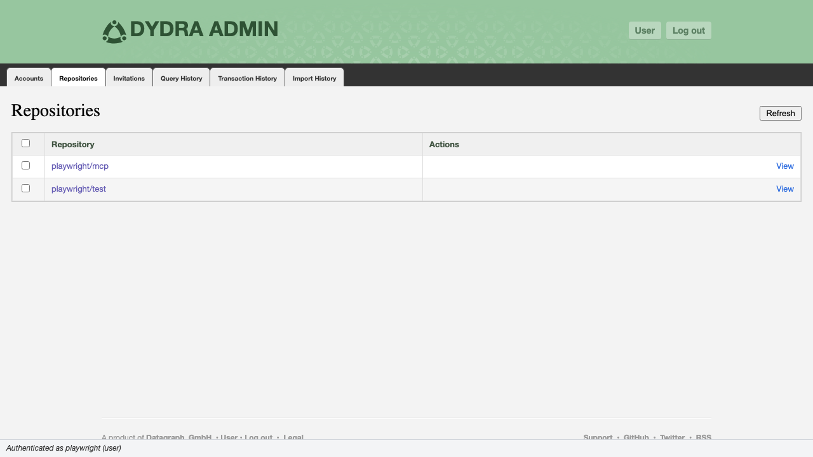

Dydra admin console · manual · 04
Repository Operations
Browse, create, and remove repositories across accounts.
Dydra admin console · manual · 04
Browse, create, and remove repositories across accounts.
The Repositories tab presents the repositories belonging to the accounts selected in the Accounts tab. Its contents are determined by the account selection state, making it the second stage in the cross-tab filtering chain described in Section 2.5.
Data is fetched from GET {host}/system/accounts/{accountName}/repositories for each checked account. Results from multiple accounts are aggregated and sorted by the combined account/repository path.

Figure 4.1: The Repositories tab with repositories from selected accounts.
Prerequisite
The Repositories tab requires at least one account to be selected in the Accounts tab. If no accounts are selected, the tab displays "No accounts selected" and no data is fetched.
| Column | Contents | Notes |
|---|---|---|
| Checkbox | Selection control | Checked repositories determine which repositories' query history is fetched in the Query History tab. See Section 2.5. |
| Repository Path | {accountName}/{repositoryName}, rendered as a link |
The link target is the repository's management view in the user application: {host}/ui/user/{accountName}/repositories/{repositoryName}. |
| Actions | View link; Delete button (Admin only) | The View link opens the user application's repository view. The Delete button is suppressed for operator-level sessions. |
| Control | Availability | Function |
|---|---|---|
| Refresh | Always | Re-fetches repositories for all currently selected accounts. Clears and rebuilds the table. |
| New | Admin only | Opens the New Repository dialog. See Section 4.4. |
| Check All | Always | Toggles the selection state of all repository checkboxes. Displays an indeterminate state when some but not all repositories are selected. |
New repositories are created from the New Repository dialog. A repository is always created under an existing account.
Step 1
Click New in the tab controls. The New Repository dialog opens.

Figure 4.2: The New Repository dialog.
Step 2
Select the target account from the dropdown. The dropdown is populated by fetching GET {host}/system/accounts; it reflects the complete account list, not merely those currently checked in the Accounts tab.
Step 3
Enter the repository name in the text field. Repository names are case-sensitive and must be unique within the account.
Step 4
Click Create (or press Enter). The application issues POST {host}/system/accounts/{accountName}/repositories.
Step 5
On success, the dialog closes and the repository is appended to the table if its account is currently selected. If the selected account set does not include the target account, the new repository will appear only after that account is checked and the tab is refreshed.
Step 6
On error, the response message is displayed within the dialog. Correct the inputs and resubmit.
The View link on each row opens the repository's management page within the user application. This provides access to the repository's data, views, and collaborator configuration — operations that fall outside the scope of the admin console.
Session context
Navigating to the user application via the View link opens it in the same browser tab. The admin session remains in memory; use the browser's back button to return to the admin console without re-authenticating.
Repository deletion permanently removes the repository and all of its data, views, and access control settings.
Irreversibility
Deleted repositories and their contents cannot be recovered. Export any data that must be preserved before proceeding.
Step 1
Click Delete on the row of the repository to remove.
Step 2
A confirmation dialog appears, identifying the repository by its full path.

Figure 4.3: The repository deletion confirmation dialog.
Step 3
Confirm the deletion. The application issues DELETE {host}/system/accounts/{accountName}/repositories/{repositoryName}.
Step 4
The server response (N-Triples format) is briefly displayed. The repository is removed from the table.
Repository checkboxes control which repositories' query history is displayed in the Query History tab:
The Transaction History and Import History tabs are system-wide and are not filtered by repository selection.